Every month
Guild Meeting
First Thursday, 7 PM
St. Mary of Victories
744 S Third St, St. Louis
Catholic tradesmen welcome.
sjwg.org/events
sjwg.org/events
Nine ready posts, 1080 × 1080 (square works on Facebook and Instagram). Copy the caption, download the picture, post. Wording comes from the print pieces Greg signed off on. Nothing here mentions unions.
Plumbers, electricians, carpenters, painters, and more. Local Catholic tradesmen who share your values.
St. Mary of Victories
744 S Third St, St. Louis
St. Mary of Victories
744 S Third St, St. Louis

“All these are skilled with their hands… Without them no city could be lived in. Yet they maintain the fabric of the world.”Sirach 38:31–34
“We greatly wish … that these guilds may be generally restored … to help the honest workman, to protect and guard his children and family, and to promote in them piety, Christian knowledge, and a moral life.”Pope Leo XIII, Humanum Genus, 1884
St. Joseph the Worker Guild · sjwg.org
“Is not this the carpenter's son?”
Matthew 13:55St. Joseph the Worker, pray for us.
When you hire through the Guild directory, you keep work in the parish and help a father provide for his family.